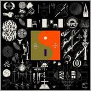

Bon Iver 22, A Million
(Jagjaguwar)
Bon Iver creates beauty out of disarray. On his first two albums, Justin Vernon took his heartbreak and turned it into gorgeous, soothing melodies. 22, A Million takes a similar approach, but the filter for his turmoil is gone. Instead, these songs are chaotic, unexpected and jarring. Samples, vocoders, and shambling synths crash together in an unstructured soundscape. But if you listen through the anarchy, you will find a stirring, masterful odyssey.
22 (Over Soon) throws you into an alien landscape of stuttering electronic glitches and auto-tuned vocals. But Vernon's voice comes in like an old friend, bolstered by a lovely sample of Mahalia Jackson's performance of How I Got Over. The aggressive 10 d E A T h b R E a s T ⚄ ⚄ is the most tumultuous song here, with pounding percussion, unintelligible vocals and crushed, flattened instrumentation. Somehow though, these elements create a perfect storm, sounding harsh but not painful. 21 M♢♢N WATER goes a bit too far, though, barely holding together as a song at all.
While many songs are crowded and cluttered, others offer a calm in this maelstrom. 715 - CRΣΣKS is a corrupted choir of Vernon's voice, contorted to several warped tones. ____45_____ is also stunning, with twisted saxophone lines, gentle banjo picking and Vernon's voice. 666 ʇ is sunny with warm guitar chords and an electronic beat pattering away. "I'm still standing in/Still standing in the need of prayer/The need of prayer/No, I don't know the path/Or what kind of pith I've amassed," Vernon sings.
It's this need for assurance from God on his path that occupies Vernon's thoughts on this album. "These will just be places to me now," he sings on 33 “GOD," giving up attachments over a grounded piano melody. On previous records, this song may have been just his voice and the keys. Here? It's buried and resurrected around samples from Jim Ed Brown, Lonnie Holley and Paolo Nutini. 8 (Circle) hits a similar note, as he sings "Not sure what forgiveness is/We've galvanized the squall of it all/I can leave behind the harbour."
29 #Strafford APTS comes the closest to combining all aspects of Bon Iver so far. While there are electronic vocals and floating synths, this is a graceful spiritual that harkens back to earlier works. If you don't feel something when that voice wails out the word "canonize," or when Vernon breaks into distortion as he ascends to falsetto, check your pulse; you may be dead inside.
Vernon's desperation for answers find a resolution of sorts on 00000 Million. This piano-based hymn finds Vernon trying to cut ties, only to return to familiar haunts. "I hurry bout shame, and I worry bout a worn path/And I wander off, just to come back home," he sings, the weariness clear even through a vocal effect. "Well it harms, it harms me, it harms, I'll let it in," he concludes, choosing to stay and live with the pain.
22, A Million finds Vernon searching for a solution to the hole in his heart that he tried to fill with pandemonium. But despite the pleading and searching for answers from God, it's up to him. Maybe the solution is realizing that there isn't one at all. Vernon may not be sure if he's on the right path, but he's certainly on a good one.
10 October, 2016 - 04:20 — Joe Marvilli